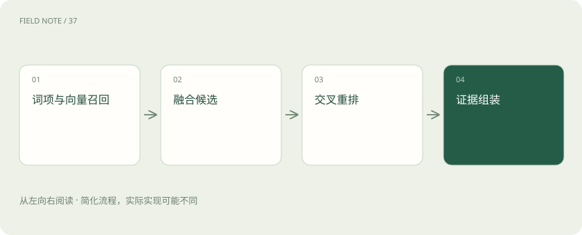
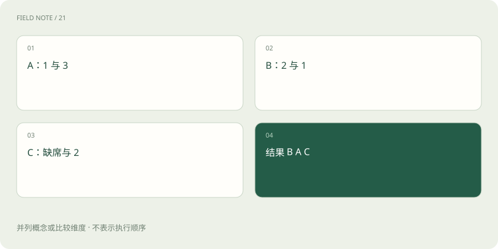

先读哪些知识
先用一个类比理解
类比只帮助建立直觉，不等同于技术的完整机制。
一图看懂

检索目标不是找同义句
用户问“分支出差住店能报多少”，相关材料可能写的是“住宿费用限额”。系统需要语义召回，也要识别分支名称、制度编号等精确信息。任务目标是找到足以支持回答的条款集合，而不是返回一条看起来最相似的句子；限制条款和例外可能与问题措辞并不相似。
BM25 的作用与边界
BM25 基于词项匹配，考虑词频、词项稀有度与文档长度等因素，通常适合编号、人名及精确术语。它依赖分词和查询表达，用户换用不同说法时可能漏检。为弥补缺失而加入同义词或查询改写时，需要保留原始关键实体，不能把一个明确地区改成宽泛概念后丢掉适用范围。
稠密向量如何补位
嵌入模型将问题与片段映射到向量空间，按约定相似度寻找邻近项，能连接部分词面不同但语义接近的内容。然而空间相近不等于政策适用。否定词、数字、版本差异和组织限定都可能被弱化，因此元数据过滤与后续精排仍必不可少，尤其不能用语义相似度替代权限。
图解：召回损失定位
ANN 为什么会漏候选
精确扫描所有向量成本较高，近似最近邻索引用图或分区等结构缩小搜索范围。更大的搜索范围往往增加延迟和召回机会，但具体关系取决于索引与数据。应以精确检索结果或人工相关集作参照，区分嵌入表示本身找不到和 ANN 搜索没访问到这两种失败，调参方法不同。
融合前先统一候选身份
BM25 分数与向量相似度不在同一量纲，直接相加会让数值尺度左右排序。融合前应以稳定片段标识去重，并确认两个检索器使用同一权限与版本条件。否则同一条款因不同切块标识重复出现，或者未授权结果参与融合，后面的排序即使计算正确也不符合系统目标。
手算 k 等于六十的 RRF
RRF 为每个候选累加 1/(k+名次)，名次从 1 开始。设 A 在词项榜第 1、向量榜第 3；B 分别第 2、第 1；C 只在向量榜第 2。k=60 时，A=1/61+1/63≈0.03227，B=1/62+1/61≈0.03252，C=1/62≈0.01613，因此 B、A、C。缺席不贡献分数，并非自动排在末位再加分。
RRF 也有自己的偏好
这个算例说明，多路共同出现会提高排名，原始分数领先幅度则被丢弃。k 越大，前几名之间的贡献差越小，多路一致性相对更突出。融合窗口也重要：若候选在某一路第 101 名，而只取前 100，它对那一路的贡献就是零。应在验证集比较窗口和参数，不能把 60 当成普遍最优。
图解：算例榜单

重排重新看问题与片段
交叉编码器类重排器联合读取问题和候选，能够评估比独立向量更细的匹配关系，但成本随候选数量和文本长度增长。它只能重排已召回材料，不能凭空恢复从未出现的例外条款。候选召回不足时盲目更换重排器，容易把问题误诊成排序精度不足。
组装不是截取前五条
给定上下文预算，要同时考虑条款覆盖、重复、来源权威性和定位信息。先保留直接回答主规则的片段，再补定义、范围与例外；必要时从父段落取回上下文。两个重复主条款可能不如主条款加一条例外有用。组装后的材料仍应保留片段标识，以便答案引用与诊断追踪。
用漏斗指标定位损失
分别测召回候选中的证据覆盖、重排前后相关项位置、最终上下文中的必要条款覆盖和生成正确率。如果候选包含例外但组装删掉它，问题在预算选择；若上下文齐全却答案忽略例外，问题在生成使用。按阶段记录候选标识与分数，才可能把总体失败分解成可修复环节。
检索预算要按价值分配
候选数从二十增加到两百可能提高证据覆盖，也会增加重排成本和无关材料。应观察新增候选是否带来此前缺失的必要条款，而不仅是相关片段数量。对明确编号查询，可以优先精确命中；对范围复杂的政策题，则需要更广的候选与父段补取。
查询改写同样需要验收：把口语转成制度术语可能有帮助，但若把“离职前”改成“离职后”，系统会高效地检索错误问题。保存原查询、改写查询和命中差异，可以识别检索改进究竟来自更好表达，还是不知不觉改变了用户意图。
放在一起对比
| 阶段 | 输入 | 解决不了 |
|---|---|---|
| 召回 | 问题与索引 | 完整业务推理 |
| RRF | 多路名次 | 未召回证据 |
| 重排 | 候选文本 | 知识库缺失 |
放进真实场景
对“上海分支试用员工住店上限”查询，候选 A 是总部一般规则，B 是上海分支规则，C 是试用期特殊条款。融合榜首 B 不能单独解决问题；重排与组装必须让 C 进入上下文，然后判断特殊条款是否覆盖 B。榜首正确不等于证据完整。
别踩这个误区
想一想
重排分数很高，为什么仍会答错？
候选可能只在语义上相关却范围不符，也可能缺少例外，或生成阶段没有正确使用完整材料。
关联阅读
资料与边界
本文为原创知识讲解。类比和图示经过简化；示例数字不代表实测或报价。整理日期：2026-11-04。文末列出对应技术的原始资料，具体功能与版本支持请以原文为准。